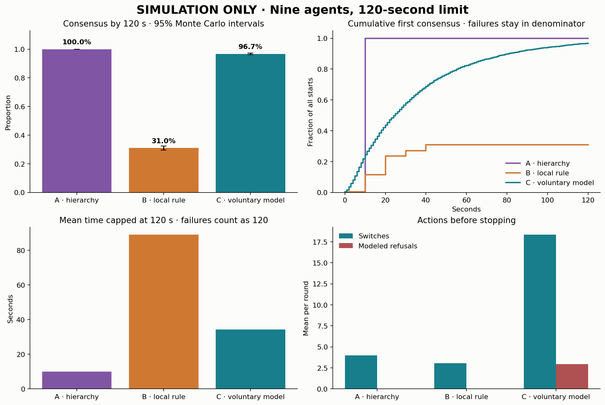
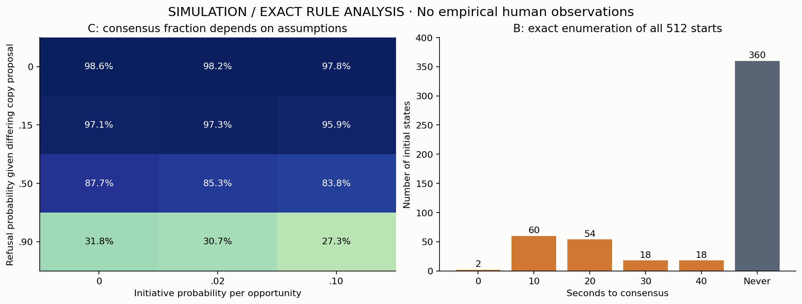
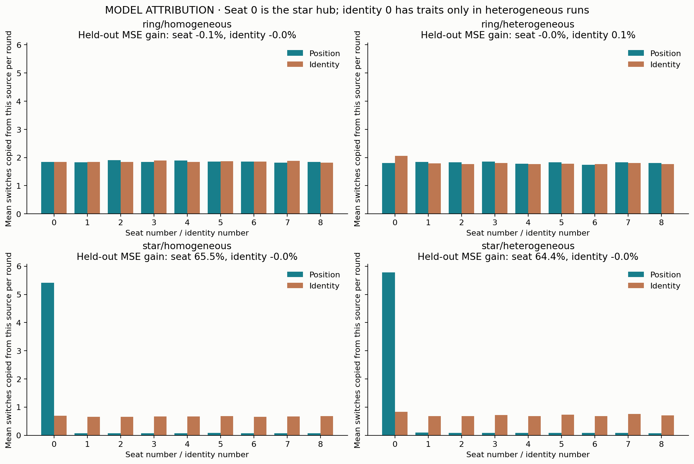
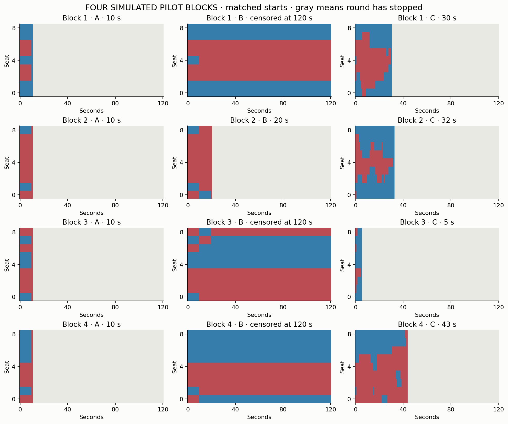

SIMULATION ONLY · NO HUMAN DATA
Coordination with the freedom to refuse
Nine participants in three specified conditions. Reproducible model experiments, exact rule checks, and a protocol for future volunteer testing.
What the calculations support: local coordination can reach agreement under the stated voluntary-choice model, but the result changes with refusal, initiative, and update timing. A structurally privileged seat can look like a leader; persistent individual traits can also produce influence. These simulations do not decide which explains leadership in real groups.
The three conditions
A: a designated leader broadcasts their initial color, followers act every 10 s, with perfect compliance in the primary benchmark. B: a simultaneous two-neighbor rule on a ring every 10 s. C: each second, agents in shuffled order independently have a 25% opportunity to act; they initiate with probability 2%, otherwise select a neighbor and may decline a differing color with probability 15%.
B is a water-inspired analogy. It contains no molecules, forces, thermodynamics, fluid equations, or molecular dynamics. C contains modeled decisions, not a measurement of free will. A, B and C also differ in information and timing, so their difference cannot isolate freedom alone.
Matched main experiment
4,000 randomized starting-state blocks × three conditions; condition order balanced and shuffled; identities permuted among positions. Initial unanimity is retained and counted at zero seconds. All rounds stop at first unanimity or 120 seconds.
Intervals quantify Monte Carlo uncertainty under this model, not uncertainty about people. Timeouts are censored; “capped seconds” includes them as 120 s. First consensus is a stopping event, not evidence of lasting agreement.

Rule B can freeze in disagreement
Exact enumeration: 152/512 (29.69%) reach consensus. All 512 starts reach a fixed point within 40 s; there are 0 persistent-cycle basins. A neighboring same-color pair cannot be broken by B. Starts containing a red pair and a blue pair therefore cannot reach consensus. Temporary reversals are distinct from a lasting cycle.

Position versus identity
The original ring has equivalent seats. The separate star-network extension gives seat 0 eight neighbors and every other seat one. The heterogeneous sensitivity assigns identity 0 a donor-selection weight of 4, refusal of .65, and initiative of .03. These advantages are stipulated. Each identity occupies every seat once per nine-mapping replicate.

In the homogeneous star, position improves held-out prediction by 65.53%; identity provides no improvement. In the homogeneous ring, neither helps. The inserted identity traits improve ring prediction by only 0.14%; most round-level variation remains unexplained by fixed identity or seat. Thus network position explains the dominant apparent leadership in this star model, while individual differences have a small, assumption-dependent effect here.
Prediction gain = 1 − held-out model MSE / held-out intercept MSE. Entire crossed replicates are held out; negative values mean worse prediction. “Influence” means another agent actually switched to a source's color in the model, not authority, intent, or experimentally established causation. Top-source persistence splits ties, skips rounds without copies, and compares adjacent seat permutations. Its 1/9 exchangeable reference is not a significance threshold because starts are matched. Cyclic seat permutations also preserve neighbor identity pairs on the ring; they do not test changing social relationships.
Assumptions and persistence of hierarchy
Former-leader scenarios increase local attention to that identity only when A occurs before C. The baseline has no status memory. A rise in persistence when memory is inserted demonstrates a mechanism, not discovery of a human tendency. All-refuse/no-initiative is a counterexample to guaranteed consensus. Initiative can escape frozen patterns but also disrupt near-consensus.
Four pilot rounds per condition
These twelve rounds are simulated feasibility examples, excluded from the main summaries. They are not a sufficient human sample. Each row uses the same colors and seating across A/B/C; execution order is recorded separately.

What remains untested
No volunteer data were collected. There is no empirical calibration, learning in the baseline, deception, enforcement cost, personality assessment, or proof concerning Freud. Consensus is an efficiency outcome; it is not a welfare score or a test of consent. A refusal is a modeled rejection of a specific differing proposal; a human holding their card is not automatically a refusal. Optional volunteer testing needs separate consent and private intention reports.
Related empirical work found network-dependent convention formation in a different task: Centola & Baronchelli (2015). It motivates the question but does not validate this simulator.
Reproduce and inspect
Run instructions · Volunteer protocol · Definitions and assumptions · Sources · Full summary · Condition table · Matched contrasts · Round-level data · Seeds and file hashes